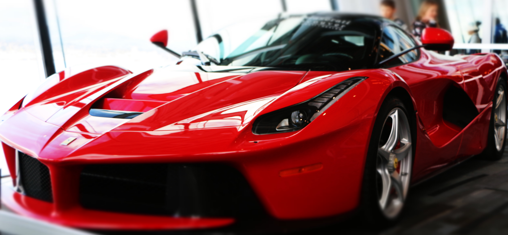

FERRARI'S MOST AMBITIOUS PROJECT
It boasts the most extreme performance ever achieved by a Ferrari production car and features the most advanced and innovative technical solutions which will, in the future, filter down to the rest of the Ferrari range. The LaFerrari is Ferrari’s first ever production car to be equipped with the F1-derived hybrid solution – the HY-KERS system – which combines an electric motor producing over 150 CV with the most powerful incarnation yet of Ferrari’s classic V12, with 800 CV at 9000 rpm.